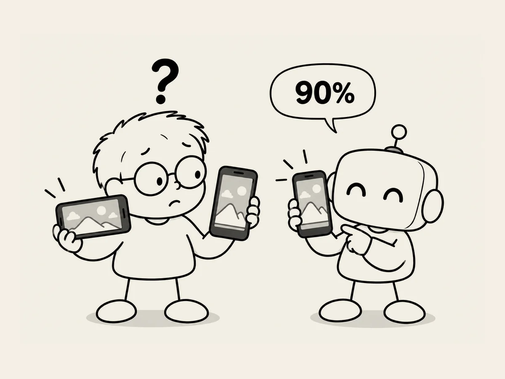

13.
Decision-Making in the AI Age: “Look It Up. Got It. Let's Do That.”
Some things feel completely ordinary
until you look at them from a different angle.
Then they seem pretty amazing.
I experienced this while working on the mobile version of the site.
A computer screen is wide.
I'd made the character images to fit that.
But on a phone,
parts of the images were slightly cut off,
and they felt different.
I had to decide whether the mobile site should be viewed horizontally or vertically.
So I just asked AI.
“Which do you think would be better?”
“Since the current design is optimized for a computer environment, landscape mode would probably be better.”
Hmm.
But how do people actually use their phones?
I asked AI to look into it.
“Look up the worldwide percentages for portrait and landscape use on mobile phones.”
It said there wasn't much recent data,
but one study showed that more than 90% of usage was in portrait mode.
Other sources pointed in the same direction:
portrait use was overwhelmingly more common.
That was all the information I needed.
I asked AI again.
“So which do you think would be better?”
“Landscape mode has its advantages, but since more than 90% of usage is in portrait mode, it would be better to design around portrait mode.”
“Got it. Let's just go with portrait.”
